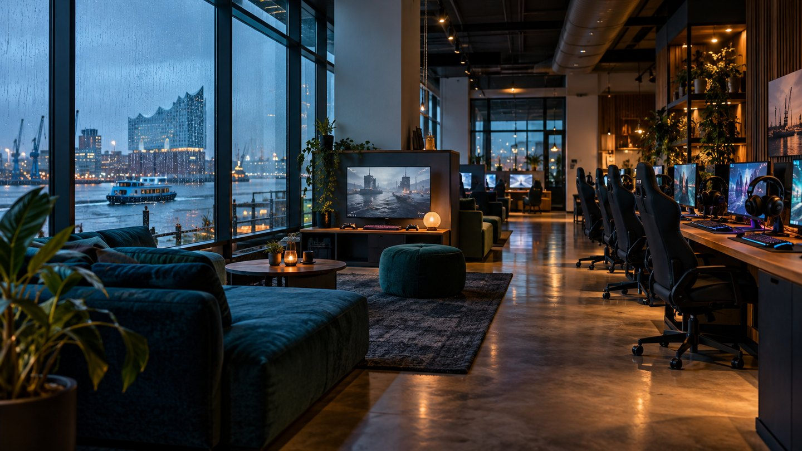

Worum es hier geht
Maritime Ruhe, dunkles Petrol und modulare Infoblöcke wie Container am Kai. Wir trennen bestätigte Standortangaben von praktischen Einschätzungen und verlinken die jeweils verantwortliche Quelle.
Unabhängiger Gaming-Guide · Hamburg
Ein Hamburger Wegweiser für spontane Sessions, verabredete Matches und einen Abend, der auch ohne Bildschirm funktioniert.
Standort prüfen
Peilung vom 11. September 2026
Maritime Ruhe, dunkles Petrol und modulare Infoblöcke wie Container am Kai. Wir trennen bestätigte Standortangaben von praktischen Einschätzungen und verlinken die jeweils verantwortliche Quelle.
Belegung, Technik und Sondertermine können kurzfristig anders liegen. Prüfe die offiziellen Angaben am Tag selbst und halte einen Ausweichhafen bereit.
Geh behutsam mit den Geräten um, schütze deinen Account und achte auf Lautstärke, Wartezeiten und Altersfreigaben.
Hauptbahnhof, Kunsthalle und Binnenalster liegen nah beieinander. Bei schlechtem Wetter sind Ausstellung oder Kino die angenehmere Reserve als ein langer Fußweg.
Abendplan ansehen